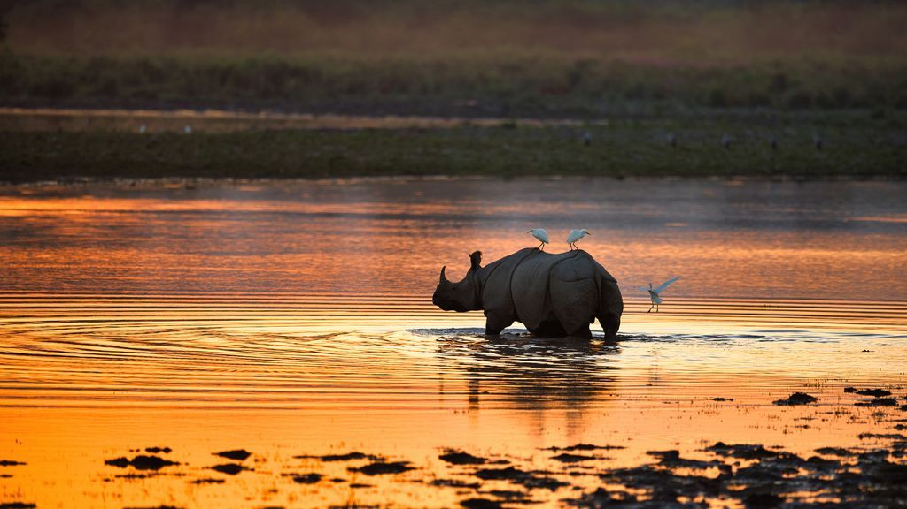
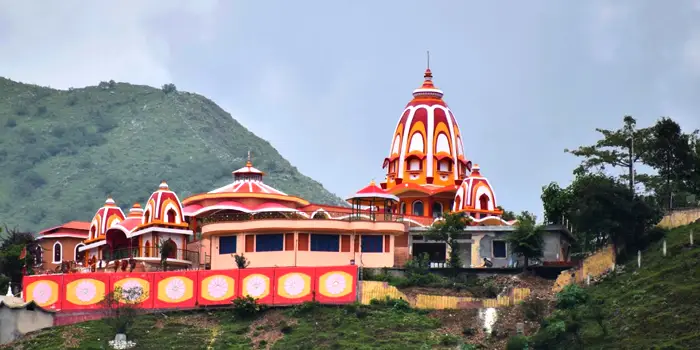

Exploring the Tea Gardens, Wildlife, and Heritage of the Northeast.

A UNESCO World Heritage Site, famous for hosting two-thirds of the world's great one-horned rhinoceroses.

Situated on the Nilachal Hill, this is one of the oldest and most revered of the 51 Shakti Peethas in India.

The world's largest river island located in the Brahmaputra River, known for its vibrant Vaishnavite culture and Satras.

A Project Tiger reserve and an Elephant reserve, known for its rare and endangered endemic wildlife.

Known as the "Colosseum of the East," this two-storied building was the royal sports pavilion of the Ahom Kings.
Also known as Peacock Island, it is the smallest inhabited river island in the world, famous for its Shiva temple.

Known as the "Scotland of Assam," this is the only hill station in the state, famous for the beautiful Haflong Lake.